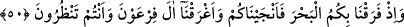

cehennem ehlinin en büyük azâbı göreceğini farzetsek, o yine de lutfa uğramış sayılır.
Çünkü Allah, daha fazlasıyla azâb etmeye kadirdir.
Tabîî bakış noksânına gelince: Her belânın içerisinde bir hayır, bir lütuf vardır.
Çünkü o belâ kendi nev’i içinde eksiktir. Meselâ Allah korusun, cüzzâm hastalığına
mübtelâ olan bir insan, kör bir kimse gibi değildir. Bu iki hastalığın zengin ve fakir bir
kimsede olması da aynı değildir. Bununla birlikte insan dînini muhâfaza ettikten sonra,
bütün bu hastalıkların önemi yoktur.
Şer’î olan bakış noksânına gelince Rasûlullah (s.a.) şöyle buyurmuştur: “Allah Teâlâ
bir kulu severse, onu belâya uğratır. Kul, belâya sabreder, rızâ gösterirse, Allah onu
seçip tercih ettiği kullarından eyler.”[270] Allah belânın elemini azaltmak için, imtihân
edenin kendisi olduğunu bildirmiştir. Şu itibârla ki Allah’ın bütün fiilleri güzeldir veya
Allah seni güzel işler yapmaya alıştırmıştır.
50. Bir zamanlar biz sizin için denizi yardık, sizi kurtardık, Fir’avn’ın
taraftarlarını da, siz bakıp dururken denizde boğduk.
( ) lâfzındaki “bâ” sebeb bildirmektedir. Bu, diğer görüşlerden daha güzeldir.
Çünkü bu cümlenin getiriliş sebebi İsrâîloğulları’na verilen nimetleri saymak ve onlara
bu ihsânı hatırlatmaktır. “Sizin sebebinizle” denilmekle, İsrâîloğulları’na yüksek bir
derece verilmiştir. Bu da bir tür nimettir.
Başka bir görüşe göre de “bâ” “lâm” mânâsı ifâde etmektedir. O zaman mânâ: “Sizin
için denizi yardık” şeklinde olur.
Bu deniz, Fars denizlerinden biri olan “Kulzüm”[271] denizi veya onların arkasındaki
“İsaf” denizidir. Allah Teâlâ, denizden İsrâîloğulları’nın her boyu için bir olmak üzere
on iki yol açmıştır.
“Sıbt”; çocuğun çocuğu; yâni torun demektir. Araplardaki kabîlelere benzeyen
İsrâîloğulları’nın kollarına bu ad verilir. Ya’kûb’un evlâdı olan bu boyları Allah, sâhile
çıkarmak sûretiyle boğulmaktan kurtarmıştır.
“Gark”; sıvı bir şeyin içinde dibe çökmek, demektir. Bir şeyin suda garkolması, onun
suyun dibini boylamasıdır. “İğrâk” ise suda helâk etmek, demektir. Helâk edilenler
arasında Fir’avn’ın bulunduğu bilindiğinden ve boğulmaya en müstehak olduğundan
âyette adı zikredilmemiş; “Fir’avn taraftarları” denilmiştir.
İsrâîloğulları, denizin yarıldığını, kendileri kurtulduktan sonra tekrar kapanıp Fir’avn
ve taraftarlarının boğulduğunu gözleriyle görmüşler, sâhile vuran cesedleri
seyretmişlerdir.
Kurtubî, bu olayı şöyle anlatmaktadır: İsrâîloğulları kendileri kurtulup Fir’avn’ın
boğulmasından sonra dediler ki: “Ey Mûsâ, biz Fir’avn’ın boğulduğuna pek emin